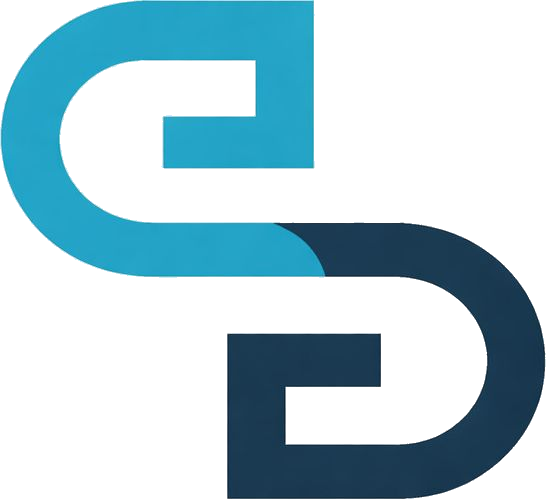

01 / Product systems2026

LongpassA connected incentive journey for companies and employees.
Translated stakeholder feedback into a coherent KPI, award, vesting, claim, and performance-history experience.
Product strategy Delivery leadership Applied AI
I connect people, product thinking, delivery, and practical AI to move complex ideas forward—and get them shipped.
6+ yearsSaaS, AI & digital platformsLahore to the world
Selected casework
Four deeper case studies, followed by a broader view of the AI, product, architecture, and experience work I have delivered.

LongpassTranslated stakeholder feedback into a coherent KPI, award, vesting, claim, and performance-history experience.
Consolidated product thinking into an integrated BRD, FRD, and SRS, then defined a focused mobile-first MVP and go-live controls.
Tested critical journeys across authentication, challenges, wallets, predictions, brackets, and simulations—then prioritised what mattered for launch.
Architected prompt and dialogue-state systems for turn-taking, interruptions, recovery, tool execution, and secure agent behaviour.
Project index
From prompt systems and AI workflows to product architecture, data models, learning platforms, and complete digital experiences.
Prompt engineering
Owned the complete prompting layer for personalized, child-friendly story generation and more consistent narrative journeys.
End-to-end product build
Built the AI receptionist from start to finish, connecting call handling, qualification, booking, transfer, and post-call summaries.
Product architecture
Created the complete architecture for a connected suite of PDF editing, conversion, signing, and AI-assisted document workflows.
Data architecture
Designed the core product schema, defining the entities, relationships, and data structure needed to support the platform.
UI & UX design
Designed the interface and end-to-end experience for an AI-assisted authority, prospect research, and content workflow.
AI system design
Worked on the child-focused AI system supporting a playful digital learning experience for students.
Healthcare product
Contributed to the Ciquora electronic medical records product and its connected digital clinical workflows.
AI & product development
Developed product systems across applied AI, structured workflows, automation, and digital platforms.
Website design
Designed the EBG Global website experience and translated its international ecosystem into a clearer digital story.
Learning mechanism
Designed a structured legal study mechanism that turns complex material into a clearer learning and practice journey.
AI learning platform
Contributed to an AI-powered teaching copilot and digital learning experience for more effective education workflows.
AI product
Contributed product thinking and workflow definition to the ErxiebenAI product experience.
Digital product
A live-event food and beverage ordering experience built to reduce queues and make purchasing easier.
Product experience
Contributed to the Matching Paws product experience, helping shape a clearer and more focused digital journey.
Digital learning product
Contributed to the InCours digital product experience and its core user journeys.
AI workflows & prompting
Designed AI workflows and prompt systems for faster feedback, KPI suggestions, evaluation summaries, and clearer performance insights.
How I work
I make the route from business ambition to product reality visible—so decisions stay connected from discovery through release.
Listen for the real problem, map the people affected, and separate evidence from assumption.
Turn goals into journeys, requirements, priorities, acceptance criteria, and a focused MVP.
Keep teams aligned through visible decisions, dependencies, milestones, risks, and feedback.
Test complete journeys, prioritise launch risk, and turn findings into confident release decisions.
Experience
More than six years across product delivery, client success, business analysis, and hands-on applied AI.
EBG Global
Lead discovery-to-release delivery for client-facing SaaS, web, AI, and emerging-technology products.
VerityIndex
Design prompt architecture, dialogue-control logic, conversational datasets, and adversarial evaluation systems.
Ciqora Solutions
Develop an AI product stack spanning dataset engineering, structured inference, automation, hosting, and evaluation.
RenesisTech
Built and shaped AI-enabled marketing, education, and conversational products while advising clients on practical AI strategy.
MindBridge
Led product discovery and requirements for enterprise web applications, analytics, and successful feature releases.
About Nouman
I am a product, delivery, and applied-AI professional with a business analyst’s eye for detail and a product owner’s instinct for momentum.
My best work happens where the path is not obvious: a founder has an ambitious idea, customers have conflicting needs, teams need decisions, and launch quality still has to hold together. I translate that complexity into a product story people can act on.
Start a conversation
I’m open to product, delivery, applied-AI, and consulting conversations. If you have an ambitious idea, an unclear product challenge, or a launch that needs momentum, let’s talk.